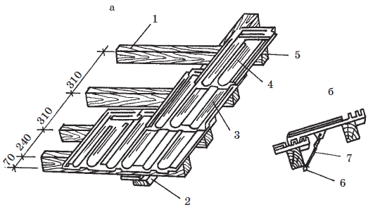

Основание под кровлю из черепицы.

Все виды кровель из мелких штучных материалов устраивают по обрешетке. Для обрешетки под кровли из глиняной и цементно-песчаной черепицы используются бруски сечением 50x50, 50x60 и 60x60 мм. Более тяжелый кровельный материал укладывается по обрешетке из брусков большего сечения.
Бруски укладывают на стропила в направлении от конька к карнизному свесу, причем карнизный брусок должен быть выше остальных на 25–35 мм, так как, если последующие ряды черепицы укладываются друг на друга, то первый ряд – на карнизный брусок. Разница в высоте карнизного и рядовых брусков обеспечивается уравнительной рейкой, которую прибивают к первому бруску. Шаг между обрешетками необходимо просчитать заранее. Коньковые бруски прибивают на смежных скатах на таком расстоянии друг от друга, чтобы приконьковые ряды черепиц не соприкасались между собой. Как правило, это расстояние равно 2–4 см от конца стропил. Обрешетку под черепичную кровлю в карнизной части, ендовы и разжелобки делают сплошной из досок толщиной 140–150 мм, уложенных без зазоров в продольном направлении. При этом их следует закруглить, как и остальные острые углы в местах примыкания отдельных элементов крыши. Обрешетка вокруг дымовой трубы должна отстоять от ее стенок на 140 мм (без изоляции досок обрешетки) или на 130 мм (с изоляцией). Перерезанные доски укрепляют дополнительными брусьями. Фронтонные свесы иногда подшивают снизу досками с ветровыми планками.
Чтобы стропила представляли собой надежные несущие конструкции, они должны крепиться гвоздями длиной 125 мм.
Как рассчитать габариты кровли? Как по длине, так и по ширине ската должно войти целое число черепиц. Поэтому размеры кровли просчитывают заранее, исходя из длины и ширины отдельной черепицы. Общая длина черепицы включает в себя кроющую длину (ту, что равна шагу между брусками), длину свеса и длину шипа. Чистая длина черепицы, которую и необходимо учитывать при подсчетах, – это только кроющая длина, так как длина шипа каждой черепицы перекрывается длиной свеса вышеуложенной черепицы. При этом необходимо помнить, что черепица прикарнизного ряда должна свисать над стропилами на 5-10 см.
Аналогичо рассчитывается ширина ската, исходя из кроющей, а не общей ширины отдельной черепицы.
Черепица крепится к обрешетке кляммерами или гвоздями ( рис. 23).

Рис. 23. Кровля из пазовой штампованной черепицы: а – начальный период укладки; б – крепление черепицы: 1 – карнизная обрешетка; 2 – стропильная нога; 3 – половина пазовой черепицы; 4 – цельная пазовая черепица; 5 – обрешетка; 6 – гвоздь; 7 – проволока